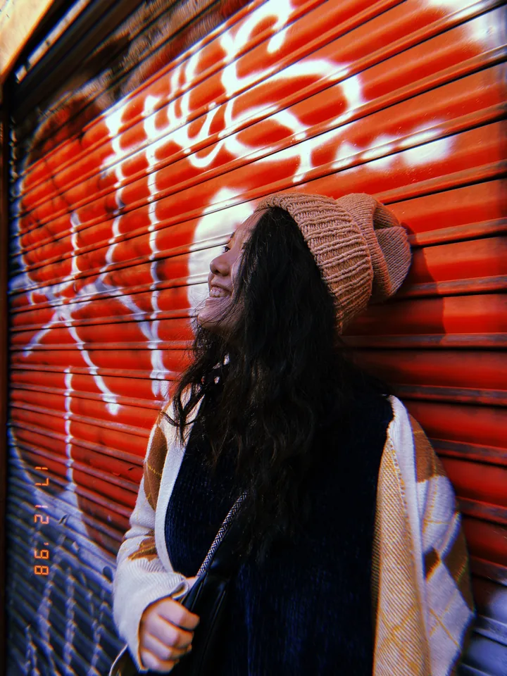
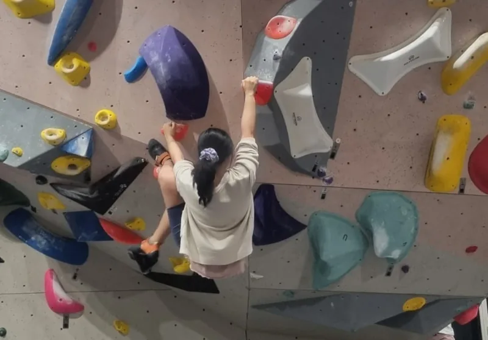

PEOPLE, INSTITUTIONS & AI
Hi, I’m Yue.
Thinking about how we keep the ability to shape our future.
I’m a policy researcher exploring AI governance and human agency. My route here runs through psychology, sociology, and Singapore’s public service.
These days, I’m asking how we spot AI risks early, make sense of uncertainty, and help institutions act.

A few open
questions
WHAT I’M THINKING ABOUT
More capable AI.
More human agency?
Working on AI and digital health in government made me notice a gap: technology was moving faster than institutions’ ability to understand and respond. I wanted to work on that gap.
01How would we notice people losing agency?
I’m interested in gradual disempowerment: how changes in work, decision-making, and the concentration of power could erode our ability to steer the future. What signals would give us time to respond?
02What makes an AI red line mean something?
Through SPAR’s Commitment Atlas, I’m mapping AI commitments across governments, frontier labs, and international processes—and asking how they can become standards we can verify and act on.
03How do we act before the evidence is obvious?
I’m exploring early-warning indicators, different mental models of risk, and the institutional incentives that shape action. I also care about bringing Asian perspectives into AI governance conversations.
Currently researching AI commitments at SPAR ↗, causal models of AI risk at the Odyssean Institute, and futures of work through Better Futures.
Thinking
out loud
Notes from the rabbit hole
All writing ↗A place to work through ideas about AI and society.
We’re all looking at the same dress
The future of AI and job disruptions
Also translating AI safety ideas and sharing opportunities in Chinese on 小红书 ↗.
The path
so far
BACKGROUND
A social scientist’s route to AI
AI governance & safety research
Research fellow at SPAR and the Odyssean Institute. Connecting evidence, foresight, and institutional responses to AI risk.
Ministry of National Development
Policy research on housing and retirement decisions, deliberative engagement, and LLM-assisted strategic foresight.
Ministry of Health
Citizen experience, behavioural research, and digital health for Singapore’s national preventive health initiative.
National University of Singapore
Psychology, with a minor in Sociology. Honours with Highest Distinction; FASS valedictorian, Class of 2024.
Always
a student
COURSES & LEARNING
Adding to the toolkit
Some structured learning along the way.
- 2026
AGI Strategy
BlueDot Impact - COMPLETED
Future of AI
BlueDot Impact - 2026
Network Analysis
IPSA–NUS Summer School · Advanced Methods in Social Science
Three more from the social science shelf
- 2026
Behavioural Decision Science
Singapore Management University - 2026
Realist Tools for Better Evaluation & Evidence Synthesis ↗
National University of Singapore - 2024
Behavioural Insights Practitioner Programme
Behavioural Insights Team
Other tabs
I have open
OFF DUTY (MOSTLY)
A person beyond the research tabs
Usually sewing something, reading on my Kobo (Kobo over Kindle, always), or trying to finish a bouldering route.
I also like making things just because they might be useful. Or fun. Ideally both.

A little shelf of favourites
2024–25 EDITIONDoing Good Better — a nudge to ask how evidence can help us do more good.
Some earlier visual experiments ↗